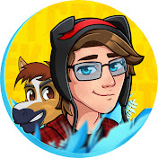
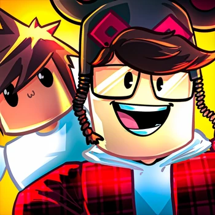
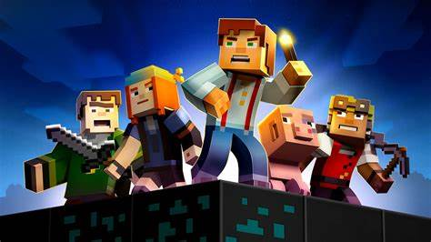
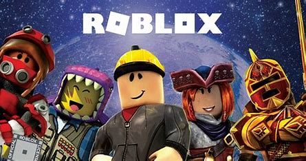
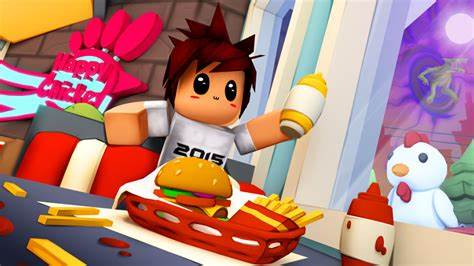

Hi!

Forrest Waldron[1] (born: January 2
8, 1997 [age 25]), better known online as KreekCraft (or simply Kreek, also known as StarCode_Rea
lKreek), is an American YouTuber known for playing the Roblox games Jailbreak and Piggy.Forrest Waldron was born on January 28, 1997 in Jacksonville, Florida and raised in Macclenny, Florida. He was born with a cataract in his left eye, which required two emergency surgeries.[2] Because of these surgeries, his retina was at risk of detaching so he couldn’t play physical sports, which is why he started playing video games. His parents divorced when he was young due to his dad’s drinking problems; he ended up getting arrested and Forrest lived with his mom. He is 5'9" (176 centimeters) tall.[3] He is currently engaged to his girlfriend Kayla.

Second Channel (Kreeky)
Forrest has an active Roblox skit and meme channel called Kreeky, which posts videos skits filmed on Roblox Studio that features him and an 8-year-old boy named Timmeh. He often makes videos related to Dhar Mann and sometimes posts Friday Night Funkin related content.
On February 1, 2022, Kreek announced that his skits are on a halt as one of his models ended up being a virus, and corrupted the entire film set for his skits. He also announced that he will be rebuilding the entire set and after that, the skits will be back on his channel.[4]
Third Channel (KreekCraft Shorts)
He announced on February 1, 2022 that he made a third channel named KreekCraft Shorts, where he uploads highlights from his livestreams. He also uploads shorts. He has a goal to get this channel up to 100K subscribers.
Fourth Channel (KreekCraft Reacts)
He recently created a reaction channel named KreekCraft Reacts a day after April Fools where he reacts to Animation videos.

Minecraft, Team Fortress 2, and Garry's Mod
KreekCraft, before switching to mainly Roblox content, played Minecraft on his YouTube channel. He would also play other games like Team Fortress 2. He later began playing more variety games like Garry's Mod, and would do ask-me-anything vlogs. He later started livestreaming the games he would normally play in his YouTube videos. In March 2016, he began doing a Fan Mail series, in which he opened fan mail he received.

Roblox
Later in 2016, Kreek discovered the game "Roblox", when it was becoming popular at the time. On Roblox, he first played Phantom Forces, the starter game for many YouTubers. Later, he began streaming Roblox almost daily. Around that same time, his Fan Mail series ended. In April 2017, Jailbreak was released, and Kreek began playing it. He enjoyed it and it became the main game he played on his channel from 2017-2020. In early 2020, he "quit" Jailbreak and began playing the game Piggy as it rose in popularity. He has also claimed that the Roblox Ready Player One Event made him popular.

Fortnite
Sometime in 2018, he announced he would be making a second channel called "Kreek - Fortnite". The channel uploaded Fortnite gameplay videos and tips on how to obtain V-Bucks, Fortnite's' in-game currency. It is now the renamed to Kreeky and no longer posts Fortnite content. He made a return to Fortnite by streaming the Ariana Grande Live Event and also stated on that stream why he doesn't post Fortnite related content anymore. He no longer posts Fortnite anymore due to controversy. This is a possible chance of him bringing it back.

Partnership with Wonder Works Studio
On August 21, 2021, he announced his partnership with Wonder Works Studio and its founders, MeganPlays and AviatorGaming, to make a story-centered horror game on Roblox called TIMMEH. He is the Head Game Producer and Voice Actor for Timmeh and himself in the game. The game was released under Beta on September 3, 2021, for 25 robux. Timmeh was fully released for free on September 24, 2021 at 5:30pm EST.